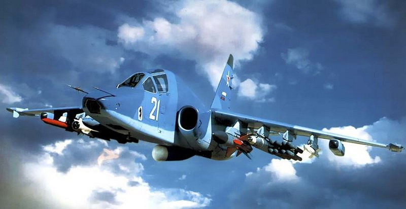
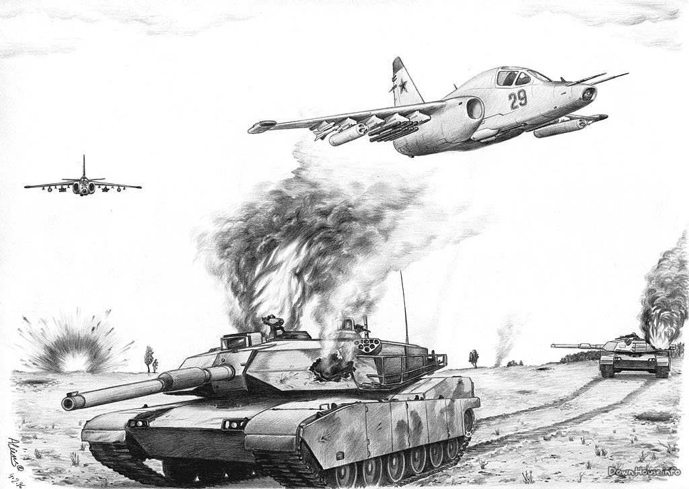

Штурмовая авиация России, как и вся другая авиация, нуждается в новых машинах. И уникальный, новейший штурмовик Су-39, как нельзя кстати, необходим нашей армии...
Су-39 является глубоко модернизированной версией превосходно показавшего себя штурмовика Су-25. Однако с учётом опыта войны в Афганистане выяснилось, что Су-25 требует дополнительного бронирования жизненно важных агрегатов и топливной системы. Поэтому в январе 1986 года по решению Военно-промышленной комиссии при Совете министров СССР начались работы над новым самолётом, способным действовать в любое время суток, получивший обозначение Су-25ТМ (в дальнейшем Су-39). На новую машину предусматривались установка нового бортового электронного оборудования и расширенного ассортимента вооружения. От разрабатываемого самолёта требовалось надёжное преодоление ПВО противника, а также возможность полёта на малой высоте с огибанием рельефа местности.
Казалось, Су-39 обеспечено блестящее будущее. Производство нового штурмовика даже освоили на Улан-Удэнском авиазаводе в 1993 году. Однако у ельцинского бюджета на «оборонку» денег не было, шли «лихие девяностые»... А Су-25-е продолжали (и продолжают) устаревать. А с 1995 года и до наших дней было выпущено... ВСЕГО ЛИШЬ ЧЕТЫРЕ НОВЫХ САМОЛЁТА!

Су-39 – ПОИСТИНЕ УНИКАЛЬНЫЙ ШТУРМОВИК.
Если для Су-25 доминирующей задачей была борьба с танками, то новая машина имеет новое вооружение, позволяющее УСПЕШНО БОРОТЬСЯ с кораблями в прибрежных районах, а с учётом боёв с пакистанскими истребителями F-16 Су-39 способен вести воздушный бой с применением ракет «воздух-воздух» Р-73, Р-27 и Р-77.
Но и это ещё не всё. Новый Су-39 имеет ЦЕЛЫЙ РЯД НОВШЕСТВ: пилот Су-39 размещается в цельносварной кабине из авиационной титановой брони, но общая ее масса, по сравнению с предшественником, уменьшена на 153 кг или на 25%. Одновременно практически настолько же, возросла масса пенополиуретана и быстро-набухающего наружного протектора топливных баков увеличенной емкости. Заполнение смежных с топливными баками отсеков эластичными пористыми материалами препятствует импульсному выплескиванию топлива через пробоины от снарядов и их осколков, предотвращая пожар. Зазоры между топливными баками и каналами воздухозаборников практически исключают возникновение пожара от попадания топлива на вход в двигатель. Усилены также конструкция центральной части фюзеляжа, магистрали топливной системы и тяги системы управления.

Для снижения заметности над полем боя в оптическом диапазоне самолет имеет специальную окраску, а радиопоглощающее покрытие уменьшает ЭПР при облучении РЛС.
Защита самолета, когда пилот не в состоянии обнаружить пуск ракеты, осуществляется установленной у основания киля станцией оптико-электронных помех «Сухогруз». Цезиевая лампа мощностью 6000 Вт создает амплитудно-модулированные помехи ракетам, уводя их в сторону. Не забыто и традиционное средство – программный отстрел ложных тепловых целей. В устройстве выброса – 192 помеховых патрона;
Снижению заметности Су-39 способствует установка бесфорсажного ТРД с нерегулируемым соплом и уменьшенной в несколько раз ИК-сигнатурой сопла. Это достигнуто за счет увеличенного центрального тела и профилирования жаровой трубы, исключающей прямую видимость лопаток турбины, а также снижением температуры выхлопных газов подводимым атмосферным воздухом.
Новая РЛС «Копьё-25» обеспечивает всепогодность обнаружения и предварительное целеуказание в различных режимах, в том числе и картографирования, значительно расширяя круг боевых задач, решаемых Су-39. Для этого используется щелевая антенная решетка диаметром 500 мм.
«Копье-25» позволяет применять тактические противокорабельные ракеты: сверхзвуковую Х-31А с активной радиолокационной ГСН и дозвуковую Х-35 с комбинированной системой наведения. Су-39 может нести четыре таких ПКР. Звено штурмовиков представляет реальную угрозу тактической группе надводных кораблей и может атаковать эсминцы типа «Спрюэнс» водоизмещением 7800 тонн, не входя в зону действия его огневых средств ПВО.
Также новая РЛС обнаруживает воздушные цели типа «истребитель» на встречных курсах на расстоянии до 57 км, на догонных – на 25 км, сопровождает одновременно 10 и обстреливает две цели.
Для поражения наиболее опасных целей Су-39 оснащён 16 ракетами «Вихрь» с дальностью пуска до 10 км, и ГОРЕ тому, кто попадёт под удар таких ракет!
Обретя качества многоцелевого самолета, Су-39 сохранил за собой репутацию высокоэффективного штурмовика, который сметёт огненным вихрем и банды боевиков, и морские эскадры НАТО. А в наши нелёгкие годы штурмовики нужны нашей стране как воздух...
Предшественик СУ-39, прототип, СУ-25, показал себя в Афгане отлично. Это признают все, в том числе и америкосы.
Штурмовик Су-39 разрежет группировку НАТО как нож масло
развернутьШтурмовая авиация России, как и вся другая авиация, нуждается в новых машинах. И уникальный, новейший штурмовик Су-39, как нельзя кстати, необходим нашей армии...
Су-39 является глубоко модернизированной версией превосходно показавшего себя штурмовика Су-25. Однако с учётом опыта войны в Афганистане выяснилось, что Су-25 требует дополнительного бронирования жизненно важных агрегатов и топливной системы. Поэтому в январе 1986 года по решению Военно-промышленной комиссии при Совете министров СССР начались работы над новым самолётом, способным действовать в любое время суток, получивший обозначение Су-25ТМ (в дальнейшем Су-39). На новую машину предусматривались установка нового бортового электронного оборудования и расширенного ассортимента вооружения. От разрабатываемого самолёта требовалось надёжное преодоление ПВО противника, а также возможность полёта на малой высоте с огибанием рельефа местности.
Казалось, Су-39 обеспечено блестящее будущее. Производство нового штурмовика даже освоили на Улан-Удэнском авиазаводе в 1993 году. Однако у ельцинского бюджета на «оборонку» денег не было, шли «лихие девяностые»... А Су-25-е продолжали (и продолжают) устаревать. А с 1995 года и до наших дней было выпущено... ВСЕГО ЛИШЬ ЧЕТЫРЕ НОВЫХ САМОЛЁТА!
Су-39 – ПОИСТИНЕ УНИКАЛЬНЫЙ ШТУРМОВИК.
Если для Су-25 доминирующей задачей была борьба с танками, то новая машина имеет новое вооружение, позволяющее УСПЕШНО БОРОТЬСЯ с кораблями в прибрежных районах, а с учётом боёв с пакистанскими истребителями F-16 Су-39 способен вести воздушный бой с применением ракет «воздух-воздух» Р-73, Р-27 и Р-77.
Но и это ещё не всё. Новый Су-39 имеет ЦЕЛЫЙ РЯД НОВШЕСТВ: пилот Су-39 размещается в цельносварной кабине из авиационной титановой брони, но общая ее масса, по сравнению с предшественником, уменьшена на 153 кг или на 25%. Одновременно практически настолько же, возросла масса пенополиуретана и быстро-набухающего наружного протектора топливных баков увеличенной емкости. Заполнение смежных с топливными баками отсеков эластичными пористыми материалами препятствует импульсному выплескиванию топлива через пробоины от снарядов и их осколков, предотвращая пожар. Зазоры между топливными баками и каналами воздухозаборников практически исключают возникновение пожара от попадания топлива на вход в двигатель. Усилены также конструкция центральной части фюзеляжа, магистрали топливной системы и тяги системы управления.
Для снижения заметности над полем боя в оптическом диапазоне самолет имеет специальную окраску, а радиопоглощающее покрытие уменьшает ЭПР при облучении РЛС.
Защита самолета, когда пилот не в состоянии обнаружить пуск ракеты, осуществляется установленной у основания киля станцией оптико-электронных помех «Сухогруз». Цезиевая лампа мощностью 6000 Вт создает амплитудно-модулированные помехи ракетам, уводя их в сторону. Не забыто и традиционное средство – программный отстрел ложных тепловых целей. В устройстве выброса – 192 помеховых патрона;
Снижению заметности Су-39 способствует установка бесфорсажного ТРД с нерегулируемым соплом и уменьшенной в несколько раз ИК-сигнатурой сопла. Это достигнуто за счет увеличенного центрального тела и профилирования жаровой трубы, исключающей прямую видимость лопаток турбины, а также снижением температуры выхлопных газов подводимым атмосферным воздухом.
Новая РЛС «Копьё-25» обеспечивает всепогодность обнаружения и предварительное целеуказание в различных режимах, в том числе и картографирования, значительно расширяя круг боевых задач, решаемых Су-39. Для этого используется щелевая антенная решетка диаметром 500 мм.
«Копье-25» позволяет применять тактические противокорабельные ракеты: сверхзвуковую Х-31А с активной радиолокационной ГСН и дозвуковую Х-35 с комбинированной системой наведения. Су-39 может нести четыре таких ПКР. Звено штурмовиков представляет реальную угрозу тактической группе надводных кораблей и может атаковать эсминцы типа «Спрюэнс» водоизмещением 7800 тонн, не входя в зону действия его огневых средств ПВО.
Также новая РЛС обнаруживает воздушные цели типа «истребитель» на встречных курсах на расстоянии до 57 км, на догонных – на 25 км, сопровождает одновременно 10 и обстреливает две цели.
Для поражения наиболее опасных целей Су-39 оснащён 16 ракетами «Вихрь» с дальностью пуска до 10 км, и ГОРЕ тому, кто попадёт под удар таких ракет!
Обретя качества многоцелевого самолета, Су-39 сохранил за собой репутацию высокоэффективного штурмовика, который сметёт огненным вихрем и банды боевиков, и морские эскадры НАТО. А в наши нелёгкие годы штурмовики нужны нашей стране как воздух...
Предшественик СУ-39, прототип, СУ-25, показал себя в Афгане отлично. Это признают все, в том числе и америкосы.
ОН ДОЛЕТЕЛ ДО АЭРОДРОМА!!!!
По данным сайтов:
-http://www.airwar.ru/enc/attack/su39.html
-http://vadimvswar.narod.ru/ALL_OUT/AiVOut/Su39/Su39004.htm
-http://www.arms-expo.ru/049049056053124052053049048.html
-http://military-informer.narod.ru/Su-39.html
-http://ru.wikipedia.org/wiki/%D1%F3-39
ПОДРОБНЕЕ; http://maxpark.com/community/832